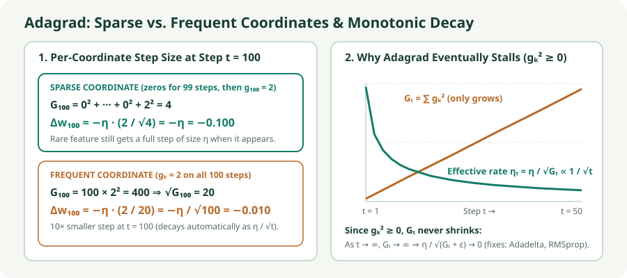

Adagrad: Per-Coordinate Rates from Cumulative Gradients
Accumulate squared gradients per coordinate, equalize sparse and frequent features, and see why monotonic decay motivates Adadelta and RMSprop.
SGD and Momentum apply the same scalar learning rate $\eta$ to every parameter coordinate. When a model has both frequent features (whose weights see large gradients on almost every batch) and sparse features (such as rare words or categorical IDs whose gradients are zero on most batches), a single $\eta$ either oscillates on frequent coordinates or barely moves rare ones. Adagrad gives each coordinate its own adaptive learning rate by dividing by the root-sum-of-squares of all past gradients in that coordinate.
1. The cumulative squared-gradient accumulator $G_t$
Starting from $G_0=0$, each step $t$ adds the element-wise square of the current gradient $g_t$ to the accumulator $G_t$ and scales each coordinate’s step by $1/(\sqrt{G_t}+\epsilon)$:
Every square, square root, and division is element-wise per coordinate $i$. Thus coordinate $i$ has its own effective learning rate at step $t$:
2. How Adagrad treats sparse vs. frequent coordinates
Compare two coordinates at step $t$ with negligible $\epsilon\approx 0$:
- Rare features get full steps: whenever a previously inactive coordinate finally fires ($g_{t,i}=g$), its accumulator is just $g^2$, so it takes a full step of magnitude $\eta$ regardless of how small $|g|$ is.
- Frequent features decay automatically at $O(1/\sqrt{t})$: a coordinate that receives steady gradients accumulates $G_{t,j}=t\,g^2$, automatically annealing its step size as $\eta/\sqrt{t}$ without a manual schedule.

3. Matrix view: diagonal outer-product preconditioning
In the original Duchi et al. (2011) formulation, the full-matrix version accumulates the outer-product sum $S_t=\sum_{k=1}^t g_k g_k^\top\in\mathbb R^{P\times P}$ and steps by $-\eta S_t^{-1/2}g_t$. Storing and inverting a $P\times P$ matrix for millions of parameters is intractable, so standard Adagrad keeps only the diagonal entries $\operatorname{diag}(S_t)=G_t$:
4. Lab: watch the accumulator grow and steps shrink
On the shared quadratic valley, inspect how the cumulative squared-gradient state $G_t$ grows on every step and steadily reduces the effective learning rate $\eta/(\sqrt{G_t}+\epsilon)$ in each coordinate.
Adagrad: cumulative $G_t$ and decaying coordinate rates
Compare the steep and flat axes of the valley: the steep coordinate accumulates a large $G_{t,i}$ on step 1, immediately damping its oscillation.
- Inspect step 1: because $G_1=g_1^2$, both coordinates initially move by $\approx\pm\eta$ regardless of the curvature ratio $\kappa$.
- Watch late-step slowdown: with $\eta=0.5$, run 100 steps—as $G_t$ accumulates early large gradients, the effective learning rate $\eta/(\sqrt{G_t}+\epsilon)$ drops and progress slows down.
- Rotate the valley ($0^\circ$ vs. $45^\circ$): because $\operatorname{diag}(G_t)$ is diagonal in the parameter axes, rotating the valley couples the coordinates.
5. Why Adagrad stalls in deep learning (and motivates Adadelta & RMSprop)
Because every squared gradient is nonnegative ($g_{t,i}^2\ge 0$), the accumulator $G_{t,i}$ is monotonically non-decreasing:
In convex problems (where gradients naturally approach zero near the single global optimum), this $O(1/\sqrt{t})$ decay is desirable. In non-convex deep learning, however, large gradients during early training inflate $G_t$ permanently; if the network later enters a flat plateau or saddle region, $\eta_{t,i}$ has already shrunk too much to move.
The next two chapters fix this exact problem by replacing the all-time sum $G_t=\sum_{k=1}^t g_k^2$ with an exponential moving average $v_t=\rho v_{t-1}+(1-\rho)g_t^2$ that forgets old squared gradients (Adadelta and RMSprop).
6. Implementation and state memory
# Element-wise operations; G persists across batches and only grows.
G += grad.square()
parameter -= lr * grad / (G.sqrt() + eps)
optimizer = torch.optim.Adagrad(
model.parameters(), lr=0.01, lr_decay=0,
weight_decay=0, initial_accumulator_value=0, eps=1e-10
)Optimizer state memory: Adagrad stores one extra number per parameter—the cumulative sum $G_{t,i}$ ($+4\text{ bytes/parameter}$ in FP32, the same state footprint as SGD with Momentum and half that of Adam/Adadelta).
7. Questions worth answering
Because $G_1=g_1^2$, the first update is $\Delta w_1=-\eta\frac{g_1}{\sqrt{g_1^2}+\epsilon}\approx-\eta\operatorname{sign}(g_1)$ for every coordinate with $g_{1,i}\neq 0$. Thus the first step jumps to a corner $(\pm\eta,\dots,\pm\eta)$ regardless of gradient scale.
No. Since $g_{t,i}^2\ge 0$, $G_{t,i}$ can only stay the same (when $g_{t,i}=0$) or increase (when $g_{t,i}\neq 0$), so $\eta/(\sqrt{G_{t,i}}+\epsilon)$ never increases.
When most embedding rows are updated only rarely, their accumulators $G_{t,i}$ grow slowly instead of saturating, and storing a single accumulator per parameter without momentum prevents untouched embedding rows from drifting on every step.
Sources
Duchi, Hazan, and Singer, Adaptive Subgradient Methods for Online Learning and Stochastic Optimization (JMLR 2011); PyTorch Adagrad.